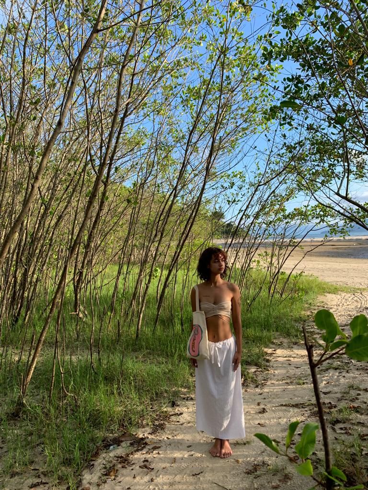

Sophia Valotto Castro
Olá! Me chamo Sophia e tenho 19 anos, faço faculdade de Cinema e Audiovisual na ESPM e alguns trabalhos como tatuadora, além de vídeos para o youtube e instagram. Durante o ensino médio fiz um intercâmbio de 3 meses para Perugia, na Itália e estudei em uma escola de artes, onde desenvolvi muito e foquei em desenho e técnicas, comecei a gravar vídeos para o youtube nesse processo de mudança e me apaixonei pelo audiovisual! No último trabalho do ensino médio, já em Caraguatatuba, cidade do litoral de São Paulo onde cresci, atuei como diretora de uma cena e decidi no momento que iria fazer cinema.
Desde que comecei a faculdade ando me aventurando em projetos diferentes e complexos, que apesar de ser estressante foi o lugar que me encontrei!
Fale comigo
Se sinta livre para falar comigo!
Email: sophiacastro2004@gmail.com
Phone: (12) 997919595